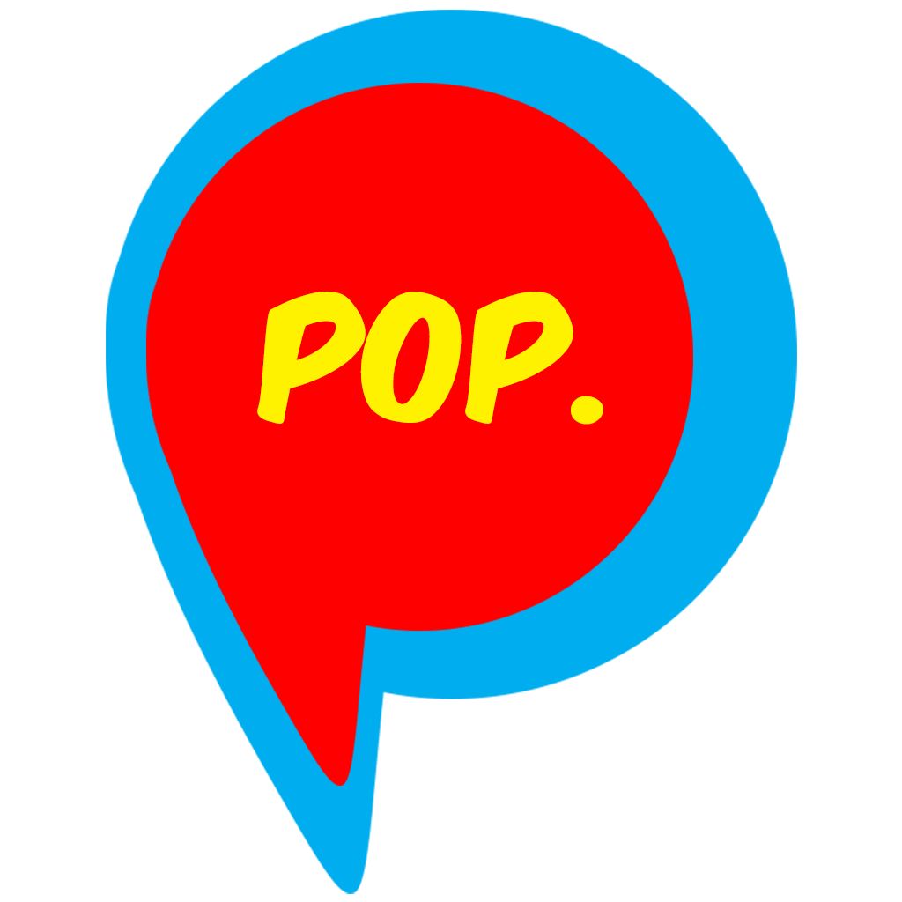

<section id="welcome" data-focus-body-class="focus-on-welcome">
  <div class="container">
    <div class="focal-container">
      <div class="logoshadow-container">
        <div class="logoshadow">
          <div class="logoshadow-circle">

          </div>
          <div class="logoshadow-point">

          </div>
        </div>
      </div>
      <h2>A video walkie talkie for you and your close friends - your superfriends.</h2>
      

    </div>
  </div>
</section>

<section id="video" data-focus-body-class="focus-on-video">
  <div class="container">
    <div class="focal-container">
      <h2>
        <span class="sub-header-line">Superfriends.</span>
        <span class="sub-header-line-subdue first">They are more real than social networks.</span>
        <span class="sub-header-line-subdue">They make us awesome.</span>
        <span class="sub-header-line-subdue last">They're there when we need to talk.</span>
      </h2>

      <button class="video-play" data-toggle="modal" data-target="#videomodal">
        <div class="video-play-container">
          <div class="video-play-button-outer">
              <div class="video-play-button-inner"><svg xmlns="http://www.w3.org/2000/svg" xmlns:xlink="http://www.w3.org/1999/xlink" version="1.0" id="Layer_1" x="0px" y="0px" width="32px" height="32px" viewBox="0 0 32 32">
              <path d="M10.039,23.99c0,2,2.014,2.589,3.143,1.457l8.235-8.098c0.746-0.746,0.785-1.956,0.037-2.7L13.3,6.55  c-1.018-1.016-3.261-0.568-3.261,1.433C10.039,10.086,10.039,22.392,10.039,23.99z"/></svg></div>
          </div>
        </div>
      </button>
    </div>

</section>

<section id="demo" data-focus-body-class="focus-on-demo">
  <div class="container">

    <div class="row">
      <div class="col-md-12">
        <h2>Level up with Pop.</h2>
    </div>
  </div>

    <div class="row">
      <div class="col-md-8 bullet-container">
        <ol>
          <li><span>Pop is a private video channel for friends you already have in your phone's contacts.</span></li>
          <li><span>Record and send video messages with just one tap.</span></li>
          <li><span>Swipe through videos to have real ongoing video conversations.</span></li>
        </ol>
      </div>
      <div class="col-md-4 iphone-demo">
        <div class="iphone-demo-container">

          

        </div>
      </div>
    </div>
  </div>
</section>

<section id="story" data-focus-body-class="focus-on-story">
  <div class="container">
    <h2>Go super.<br>Get started with Pop today.</h2>

    <button onclick="(function(){location.href='https://itunes.apple.com/us/app/pop-video-texting-is-faster/id875099176?ls=1&mt=8';}());">{% include apple-logo.html class="apple-logo" width="50px" height="55px" %} Download</button>
  </div>
</section>
